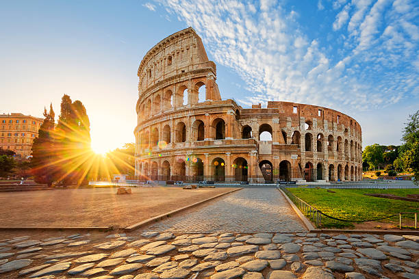

Um pouco sobre mim
- Me chamo Heitor Severo, tenho 15 anos
- Gosto de praticar esportes como futebol e basquete
- Moro em São Paulo - SP, na região Norte da cidade
- Tenho um irmão mais velho, Daniel, de 17 anos
Foto do topo: minha formatura.
Curiosidades do Heitor
- Antes da escola eu não gostava de programação
- Minha linguagem preferida é Python
- Sou uma pessoa comunicativa, extrovertida e competitiva
- Gosto muito de trabalho em grupo
- Tenho o sonho de casar, me tornar pastor e morar nos EUA
- Quero viajar para a Europa com os meus amigos
- Quero fazer mestrado em História da Igreja
Projeto Astro
[Escreva aqui, em 2 ou 3 frases, o que é o Projeto Astro e qual problema ele resolve.]
- Objetivo
- O projeto Astro, era baseado em um problema encontrado na falta de gerenciamento das NRs(Normas Regulamentadoras nas Empresas atuais)
- Tecnologias
- Ao longo do projeto nós usamos: Java, HTML5, CSS3, JS, Figma...
- Minha parte
- No projeto eu fui responsável pelo desenvolvimento do Back-End
- Situação
- Concluimos o projeto, no dia 02/11/2026!!!
Lugares que sonho conhecer
-
Alemanha - Berlim -

Portugal - Lisboa -

Itália - Roma -
França - Paris